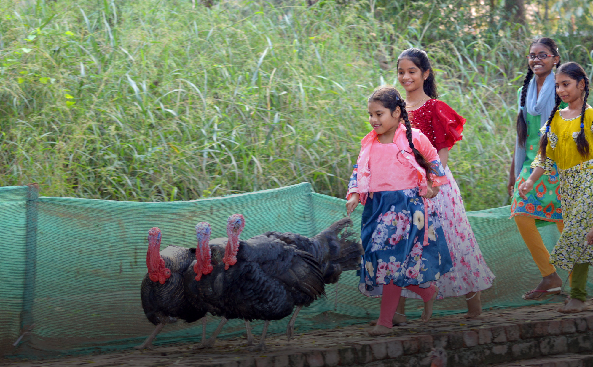
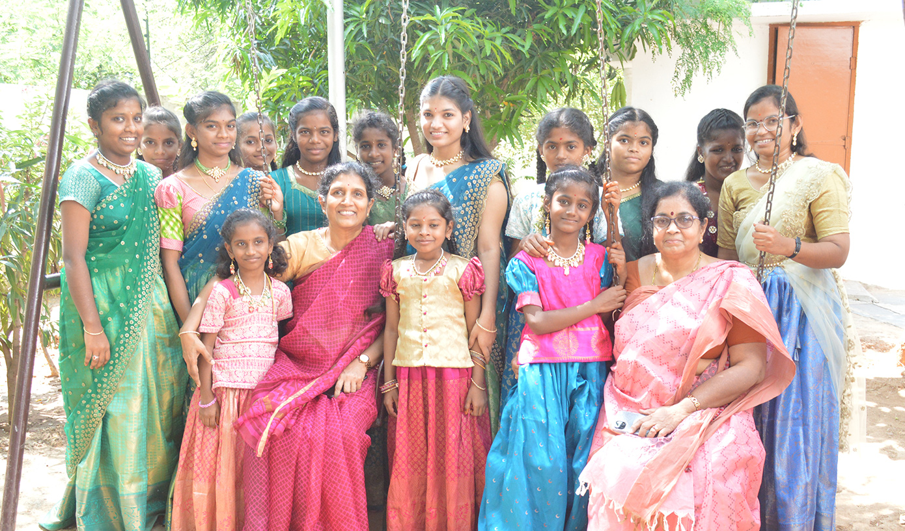

About Aarti
Change requires a village — literally.
"Our children are stronger and healthier in our pollution-free environment at Aarti Village, and are growing up with a healthy respect for nature."
Life at Aarti
A campus rooted in nature and community
We at Aarti are committed to protecting the environment as our children live in close proximity to nature. Caring for the environment is another value that is inculcated along with Integrity, Honesty, Accountability and Commitment.
The girls live in a net-zero campus where everything is recycled and reused, and electricity is produced through rooftop solar panels. Organic methods that don't deplete the soil of nutrients are used for growing vegetables.
Caring for and nurturing plants comes naturally to our children. Our efforts at afforestation have borne fruit as the increased green cover is visible, and the campus is now home for many species of birds.

Aarti Village at a Glance
Our campus in numbers
Campus Area
Area
Electricity
Campus
The rest of the campus is made up of: Fruit-bearing & Shade-giving Trees · Vegetable Garden · Nursery for Plants · Playgrounds · Vermicomposting Unit
Gallery
Life at the Village
